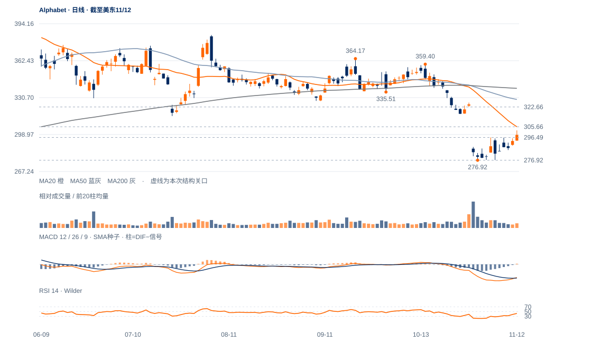

低位出现可核验差异
10月30日276.92与11月5日277.07仅差0.15；同日RSI由21.38升27.98，显示低位跌势减速，但不是独立价格反转确认。
未来1—5日修复机会增加，先看296.49上方能否保持及305.66压力；1—3周仍按底部候选处理，尚未恢复中期上升。

查看大图 ↗10月30日276.92与11月5日277.07仅差0.15；同日RSI由21.38升27.98，显示低位跌势减速，但不是独立价格反转确认。
12日收298.70首次高于11月4日中峰296.49，原两日过滤只记首日。前低间隔仅4个交易日，不将其包装为已成熟的长期双底。
20日线305.66在上，10月29日下缺口288.33—322.66仍未完全回补；50/200日线329.12/338.69更高。20日绝对跌14.47%、相对纳指比值跌9.92%，修复尚未消除下降背景。
11月11—12日连续上涨且12日量比回到0.88，低谷保持；若296.49继续站稳并回收305.66，修复延续的判断会增强。